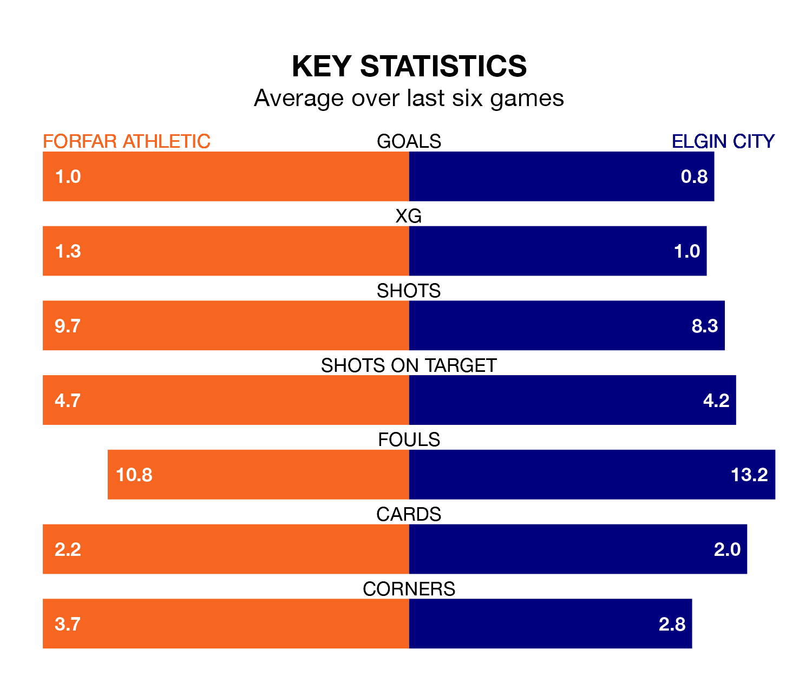

Struggling Forfar Athletic face Elgin City at Station Park on Saturday looking to build on a win in their last league outing.
After securing all three points with a 1-2 victory over Stenhousemuir on January 6, the Loons sit ninth in League Two.
They travel to play an Elgin side eighth in the standings, who also won their last match, 2-1 against Stranraer.
With Marc McCallum between the sticks, Forfar can rely on one of the league's safest pair of hands. He has kept six clean sheets in his 19 appearances this season, and only one other 'keeper – Stenhousemuir's Darren Jamieson – has been able to prevent the opposition scoring on more occasions in League Two.
In Elgin's net, Tom McHale has four clean sheets in 17 games. He has conceded a goal every 55 minutes, 20% more often than the 68 minutes between goals for McCallum.
In the last 10 years, Forfar and Elgin have played each other on 15 occasions. Forfar won three of them, Elgin four, and they drew eight times.
On average, the Loons scored 0.9 goals and the Black & Whites 1.0 in those matches.
Their last meeting was on November 21, when Elgin won 1-0 at home.
Athletic are in disappointing form in League Two, with one win and two draws from their last six games.
With three wins and three losses over that period, City's form is better – they have taken nine points from 18, compared to the Loons' five.
With 15 goals in 18 games so far this season, the Black & Whites are the league's lowest scorers with 0.8 goals per game. And they are conceding more than average, letting in 34 goals at a rate of 1.9 per game.
The home team are also below average scorers, with 0.9 goals per game, compared to a league average of 1.4. They have conceded 1.3 goals per game.
Updated: 10:50, 10/01/24